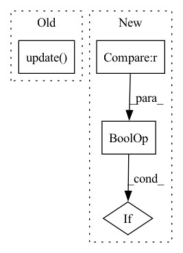

Pattern ID :4505
Before Change
class MetaLogger(type):
def __new__(cls, name, bases, dict):
wrapper_dict = logging.Logger.__dict__.copy()
wrapper_dict.update( dict)
wrapper_dict["__doc__"] = logging.Logger.__doc__
del wrapper_dict["__reduce__"] // make Logger object can be pickled
return type.__new__(cls, name, bases, wrapper_dict)
After Change
def __new__(cls, name, bases, dict):
wrapper_dict = logging.Logger.__dict__.copy()
for key in wrapper_dict:
if key not in dict and key != "__reduce__" :
dict[key] = wrapper_dict[key]
dict["__doc__"] = logging.Logger.__doc__
return type.__new__(cls, name, bases, dict)In pattern: SUPERPATTERN
Frequency: 3
Non-data size: 4
Instances Fragment ID: 16366489
Project Name: microsoft/qlib
Commit Name: ca92cb980ca9a49d9c41f98e5f2c2c6941a8a1ae
Time: 2021-04-29
Author: dw1920@nyu.edu
File Name: qlib/log.py
M Class Name: MetaLogger
N Class Name: MetaLogger
M Method Name: __new__(4)
N Method Name: __new__(4)
M Parent Class: type
N Parent Class: type
M File Name: qlib/log.py
N File Name: qlib/log.py
M Start Line: 17
M End Line: 21
N Start Line: 17
N End Line: 22
Before Change
smplx_cmap = torch.as_tensor(np.load(
self.smplx.cmap_vert_path)).float()
return_dict.update( smplx_dict)
else:
smplx_vis = torch.load(data_dict["vis_path"]).float()
return_dict.update({"smpl_vis": smplx_vis})After Change
smplx_verts = projection(smplx_verts, data_dict["calib"]).float()
// get smpl_vis
if "smpl_vis" not in return_dict.keys() and "smpl_vis" in self.feat_keys :
(xy, z) = torch.as_tensor(smplx_verts).to(self.device).split([2, 1], dim=1)
smplx_vis = get_visibility(xy, z, torch.as_tensor(smplx_faces).to(self.device).long())
return_dict["smpl_vis"] = smplx_vis Fragment ID: 16366491
Project Name: yuliangxiu/icon
Commit Name: 8b39536647d9f3166985fcf23ee9f4a7bb6361b7
Time: 2022-10-11
Author: yuliang.xiu@tuebingen.mpg.de
File Name: lib/dataset/PIFuDataset.py
M Class Name: PIFuDataset
N Class Name: PIFuDataset
M Method Name: load_smpl(3)
N Method Name: load_smpl(3)
M Parent Class:
N Parent Class:
M File Name: lib/dataset/PIFuDataset.py
N File Name: lib/dataset/PIFuDataset.py
M Start Line: 464
M End Line: 501
N Start Line: 414
N End Line: 449
Before Change
if context.max_iteration is not None and context.iteration >= context.max_iteration:
break
avg_data_time.update( time.time() - end)
image = image.to(device=context.device)
output = model(image)
if isinstance(context.criterion, nn.BCEWithLogitsLoss):After Change
context.iteration += 1
// schedule per iteration
if context.iter_scheduler and context.warmup_iteration <= context.iteration :
context.iter_scheduler.step()
// schedule per epoch Fragment ID: 16366490
Project Name: alibaba/tinyneuralnetwork
Commit Name: b6886be8e00dfa3f0935aca089d331e0e119d986
Time: 2022-07-04
Author: 35247391+dinghuanghao@users.noreply.github.com
File Name: tinynn/util/cifar10.py
M Class Name: AnonimousClass
N Class Name: AnonimousClass
M Method Name: train_one_epoch(2)
N Method Name: train_one_epoch(2)
M Parent Class:
N Parent Class:
M File Name: tinynn/util/cifar10.py
N File Name: tinynn/util/cifar10.py
M Start Line: 98
M End Line: 139
N Start Line: 116
N End Line: 178